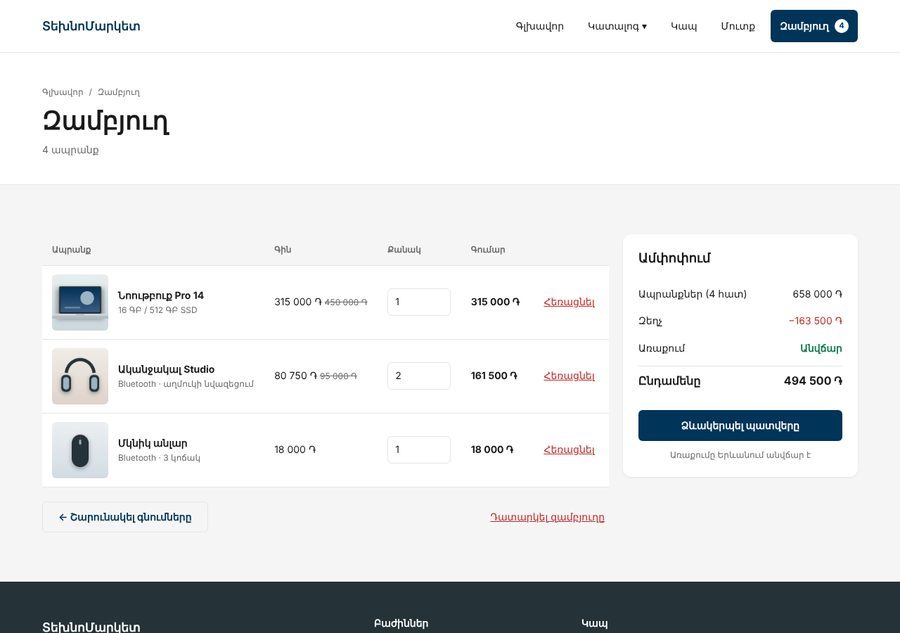
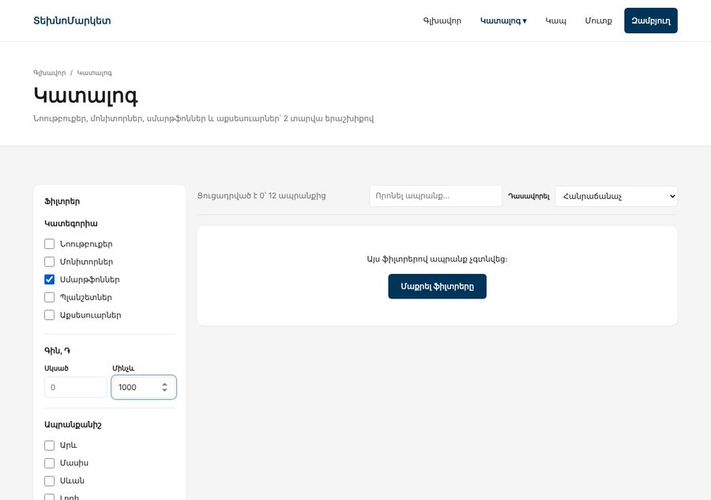

Առաջադրանք 1 / 3 · JS Դաս 15–16 · 2 դաս + տնային
Դաս 15–16-ի կատալոգը և զամբյուղը կառուցում ենք ոչ թե նոր դատարկ էջում, այլ քո ՏեխնոՄարկետում՝ Բլոկ 1-ի markup-ի և CSS-ի վրա։ JS-ը միայն լցնում է բովանդակությունը և փոխում դասերը, տեսքը մնում է CSS-ում։ Համեմատիր քեզ օրինակ 1-ի հետ, բայց միայն ավարտելուց հետո։
Բլոկ 1-ի ՏեխնոՄարկետը արտաքինից նույնն է, բայց հիմա կատալոգը ֆիլտրում է, «Գնել»-ը ավելացնում է զամբյուղ, header-ի թիվը աճում է բոլոր էջերում, իսկ զամբյուղի էջը հաշվում է գումարները։ Էջը թարմացնելուց հետո ոչինչ չի կորչում։


| Էջ | Ինչ է անում JS-ը | Դաս |
|---|---|---|
| Բոլոր էջերը | Header-ի զամբյուղի թիվը, դատարկ զամբյուղում՝ թաքնված | 10, 14, 16 |
catalog.html | Քարտերը՝ data.js-ից, ֆիլտրեր, որոնում, դասավորում, էջավորում, դատարկ վիճակ, ?cat= header-ի ենթամենյուից | 15 |
index.html, catalog.html, product.html | «Գնել» → զամբյուղ → «Ավելացվեց» մոդալ, որ փակվում է երեք եղանակով | 11, 12, 16 |
cart.html | Տողեր, քանակ, հեռացում, դատարկում, ամփոփում, դատարկ վիճակ | 16 |
checkout.html | Պատվերի ամփոփումը զամբյուղից, կոճակի վրա՝ ընդհանուր գումարը | 16 |
Աշխատում ես քո Բլոկ 1-ի նախագծի պատճենի վրա։ Եթե այն դեռ ավարտված չէ, սկսիր Բլոկ 1-ի օրինակից։ starter/-ում կա միայն այն, ինչ պետք չէ հորինել․
| Դաշտ | Օրինակ | Ինչի համար |
|---|---|---|
id | 1 | Զամբյուղում պահում ենք միայն այն (Դաս 16) |
image, alt | "laptop" | Նկարը՝ images/laptop.webp և .jpg |
price, oldPrice | 315000, 450000 | Զեղչ չկա՝ oldPrice: null |
category, brand | "laptops", "arev" | Նույն արժեքները, ինչ ֆիլտրերի checkbox-ների value-ում |
inStock, isNew | true, false | «Սպառված», «Նոր» պիտակ |
rating, popularity, added | 4.8, 98, "2026-03-02" | Դասավորում՝ վարկանիշով, հանրաճանաչ, նորերը |
Այս առաջադրանքում ապրանքները հաստատուն զանգված են, ինչպես Դաս 15-ում։ Առաջադրանք 3-ում նույն տվյալները կգան fetch-ով, և կտեսնես, թե որքան քիչ կոդ է փոխվում, եթե ճարտարապետությունը ճիշտ է։
Աշխատիր ստուգակետերով, ինչպես Դաս 15-ում․ ամեն քայլից հետո բացիր բրաուզերը, Console-ը պիտի մաքուր լինի։ Ամեն քայլից հետո՝ commit, երբ Դաս 17-ից հետո Git-ը կսովորես (կամ պահիր թղթապանակի պատճեն)։
<head>
...
<link rel="stylesheet" href="css/main.css">
<!-- Ընդհանուրը՝ բոլոր էջերում, այս հերթականությամբ -->
<script src="js/data.js" defer></script>
<script src="js/storage.js" defer></script>
<script src="js/utils.js" defer></script>
<script src="js/cart.js" defer></script>
<!-- Միայն catalog.html-ում -->
<script src="js/add-to-cart.js" defer></script>
<script src="js/catalog.js" defer></script>
</head>defer-ով սկրիպտները կատարվում են գրված հերթականությամբ (Դաս 15)։ cart.js-ը օգտագործում է PRODUCTS-ը և load-ը, ուստի գալիս է data.js-ից և storage.js-ից հետո։ Եթե Console-ում տեսնես PRODUCTS is not defined, ստուգիր հերթականությունը։ Դաս 18-ում այս խնդիրը կվերանա մոդուլներով։
cart.jsԻնչպես Դաս 16-ում՝ զամբյուղում միայն { id, qty }։ Գինը, անունը և նկարը միշտ վերցնում ենք PRODUCTS-ից։ Նոր բան՝ fullSubtotal-ը, որ ամփոփումը կարողանա ցույց տալ զեղչը։
function getCartItems() {
return cart
.map(item => {
const product = PRODUCTS.find(p => p.id === item.id);
if (!product) return null; // ապրանքը հանվել է կատալոգից
const fullPrice = product.oldPrice ?? product.price;
return {
...product, // JS Դաս 7
qty: item.qty,
subtotal: product.price * item.qty,
fullSubtotal: fullPrice * item.qty
};
})
.filter(Boolean); // հանում է null-երը
}function addToCart(id, qty = 1) {
const existing = cart.find(item => item.id === id);
if (existing) {
existing.qty = Math.min(existing.qty + qty, MAX_QTY);
} else {
cart.push({ id, qty: Math.min(qty, MAX_QTY) });
}
saveCart();
}
function setQty(id, qty) {
const item = cart.find(i => i.id === id);
if (!item) return;
item.qty = Math.min(Math.max(qty, 1), MAX_QTY); // 1-ից 10
saveCart();
}
function removeFromCart(id) {
cart = cart.filter(item => item.id !== id); // cart-ը let է, որովհետև վերագրում ենք
saveCart();
}
function clearCart() {
cart = [];
saveCart();
}
// Ամեն փոփոխությունից հետո՝ պահպանում և header-ի թիվը։ Մեկ տեղ, ոչինչ չի մոռացվում։
function saveCart() {
save(CART_KEY, cart);
renderCartCount();
}
// Header-ի թիվը՝ բոլոր էջերում
function renderCartCount() {
const count = getCartCount();
document.querySelectorAll("[data-cart-count]").forEach(el => {
el.textContent = count;
el.classList.toggle("is-empty", count === 0);
});
}
renderCartCount();Դաս 16-ում save-ը կանչվում էր renderCart-ում։ Այստեղ յուրաքանչյուր էջ ունի իր render-ը, ուստի պահպանումը և header-ի թիվը հավաքված են saveCart()-ում, որը կանչում է ամեն փոփոխող ֆունկցիա։ Կանոնը նույնն է․ մեկ տեղ, ոչինչ չի մոռացվում։
article-ը։ Թող դատարկ <div class="grid-auto gap-20" id="products"></div>։ Ֆիլտրերի ֆորմային տուր id="filters", վիճակագրության p-ին՝ id="catalog-stats", էջավորմանը՝ id="pagination"type="search", իսկ դասավորման select-ին՝ «Վարկանիշով» տարբերակ։ «Կիրառել» կոճակները հանիր․ ֆիլտրերը կիրառվում են անմիջապեսdata-id և data-action="add"const state = {
categories: [], // ["laptops", "phones"]
brands: [],
min: null,
max: null,
stock: "all", // all · in · sale
search: "",
sort: "popular",
page: 1
};
// ---------- Էլեմենտներ ----------
const filtersForm = document.querySelector("#filters");
const productsEl = document.querySelector("#products");
const statsEl = document.querySelector("#catalog-stats");
const paginationEl = document.querySelector("#pagination");
const searchInput = document.querySelector("#q");
const sortSelect = document.querySelector("#sort");
// ---------- Ֆորմայից վիճակ ----------
const getChecked = name =>
[...filtersForm.querySelectorAll(`input[name="${name}"]:checked`)].map(input => input.value);
// Դատարկ դաշտը null է, ոչ 0 — այլապես «Մինչև» դատարկը կթաքցներ ամեն ինչ
const toNumberOrNull = value => (value === "" ? null : Number(value));function readFilters() {
state.categories = getChecked("cat");
state.brands = getChecked("brand");
state.min = toNumberOrNull(filtersForm.min.value);
state.max = toNumberOrNull(filtersForm.max.value);
state.stock = filtersForm.querySelector('input[name="stock"]:checked').value;
}function getVisibleProducts() {
let result = [...PRODUCTS]; // պատճեն — բնօրինակը չենք դիպչում
if (state.categories.length > 0) {
result = result.filter(p => state.categories.includes(p.category));
}
if (state.brands.length > 0) {
result = result.filter(p => state.brands.includes(p.brand));
}
if (state.min !== null) {
result = result.filter(p => p.price >= state.min);
}
if (state.max !== null) {
result = result.filter(p => p.price <= state.max);
}
if (state.stock === "in") {
result = result.filter(p => p.inStock);
}
if (state.stock === "sale") {
result = result.filter(p => p.oldPrice !== null);
}
if (state.search !== "") {
const query = state.search.toLowerCase();
result = result.filter(p =>
p.name.toLowerCase().includes(query) ||
CATEGORIES[p.category].toLowerCase().includes(query)
);
}
switch (state.sort) {
case "price-asc": result.sort((a, b) => a.price - b.price); break;
case "price-desc": result.sort((a, b) => b.price - a.price); break;
case "rating": result.sort((a, b) => b.rating - a.rating); break;
case "new": result.sort((a, b) => b.added.localeCompare(a.added)); break;
default: result.sort((a, b) => b.popularity - a.popularity);
}
return result;
}Դատարկ «Մինչև» դաշտից Number("")-ը 0 է, և ֆիլտրը կթաքցնի բոլոր ապրանքները։ Ուստի դատարկ դաշտը դարձնում ենք null և ֆիլտրում ենք միայն state.max !== null դեպքում։
Էջավորումը slice է (Դաս 5)․ 12 ապրանք, 6-ական էջում։ Ֆիլտրից հետո էջերը կարող են քչանալ, ուստի state.page-ը սահմանափակում ենք։
function render() {
const visible = getVisibleProducts();
const totalPages = Math.ceil(visible.length / PAGE_SIZE);
state.page = Math.min(state.page, Math.max(totalPages, 1)); // ֆիլտրից հետո էջը կարող է չլինել
if (visible.length === 0) {
productsEl.innerHTML = `
<div class="empty-state">
<p>Այս ֆիլտրերով ապրանք չգտնվեց։</p>
<button type="button" class="btn btn--primary" data-action="reset">Մաքրել ֆիլտրերը</button>
</div>
`;
statsEl.textContent = `Ցուցադրված է 0՝ ${PRODUCTS.length} ապրանքից`;
renderPagination(0);
return;
}
const start = (state.page - 1) * PAGE_SIZE;
const pageItems = visible.slice(start, start + PAGE_SIZE); // JS Դաս 5
productsEl.innerHTML = pageItems.map(createCard).join("");
statsEl.textContent =
`Ցուցադրված է ${start + 1}–${start + pageItems.length}՝ ${visible.length} ապրանքից`;
renderPagination(totalPages);
}change listener․ իրադարձությունը փուչիկանում է (Դաս 12)debounce-ով, 300 մվ (Դաս 14, 16)preventDefault և scrollIntoView (Դաս 11, 14)form.reset()-ը վերադարձնում է բոլոր դաշտերըcatalog.html?cat=laptops։ Կարդա պարամետրը Դաս 15-ի տնայինի հուշումով և նշիր համապատասխան checkbox-ըfiltersForm.addEventListener("change", () => {
const before = JSON.stringify(state);
readFilters();
// Գնի դաշտից դուրս գալիս change-ը կրկին է գալիս։ Եթե ոչինչ չի փոխվել, չենք վերագծում,
// այլապես քարտերը կփոխարինվեին հենց սեղմման պահին, և սեղմումը կկորչեր
if (JSON.stringify(state) === before) return;
state.page = 1;
render();
});Գրիր «Մինչև» դաշտում 1000, և դատարկ վիճակում սեղմիր «Մաքրել ֆիլտրերը»։ Առանց վերևի ստուգման առաջին սեղմումը չի աշխատում։ Ինչու․ դաշտից դուրս գալիս բրաուզերը նորից ուղարկում է change, render()-ը փոխարինում է կոճակը նորով հենց սեղմման պահին, և սեղմումը «ընկնում» է արդեն ջնջված էլեմենտի վրա։ Լուծում՝ եթե վիճակը չի փոխվել, չենք վերագծում։
«Գնել» կոճակներ կան երեք էջում, և կատալոգում դրանք ստեղծում է JS-ը։ Ուստի listener-ը կախում ենք document-ի վրա՝ դելեգացիա ամբողջ էջի համար (Դաս 12)։ Մոդալի HTML-ը դիր main-ի վերջում (տեքստը՝ content.md-ում)։
function addProduct(id, qty = 1) {
const product = PRODUCTS.find(p => p.id === id);
if (!product || !product.inStock) return;
addToCart(id, qty);
openCartModal(product, qty);
}
// ★ Դելեգացիա ամբողջ էջի վրա։ Աշխատում է նաև այն քարտերի համար,
// որոնք JS-ը կստեղծի ավելի ուշ (կատալոգ) — JS Դաս 12
document.addEventListener("click", (e) => {
const addBtn = e.target.closest('[data-action="add"]');
if (!addBtn) return;
addProduct(Number(addBtn.dataset.id)); // dataset-ը միշտ տող է
});
// Մոդալը փակվում է երեք եղանակով — JS Դաս 11
cartModal.addEventListener("click", (e) => {
if (e.target === cartModal || e.target.closest('[data-action="close-modal"]')) {
closeCartModal();
}
});
document.addEventListener("keydown", (e) => {
if (e.key === "Escape" && cartModal.classList.contains("is-open")) {
closeCartModal();
}
});Ապրանքի էջը դեռ ստատիկ է (Նոութբուք Pro 14)։ Ֆորմային տուր data-id="1", իսկ submit-ում կանչիր addProduct(id, qty)՝ preventDefault-ով։ Այն կդառնա դինամիկ Առաջադրանք 2-ում։
<tbody id="cart-rows"></tbody>։ Ամփոփման ul-ին՝ id="cart-summary"tr-ին՝ data-id։ Քանակի դաշտի change-ը և «Հեռացնել»-ը՝ դելեգացիայով tbody-ի վրաcart.js-ումhidden դասով։ classList.toggle("hidden", isEmpty) (Դաս 10)confirm-ով (Դաս 12)function renderCartPage() {
const items = getCartItems();
const totals = getCartTotals();
const isEmpty = items.length === 0;
// Դատարկ վիճակ՝ միայն դասերով — JS Դաս 10
filledEl.classList.toggle("hidden", isEmpty);
asideEl.classList.toggle("hidden", isEmpty);
emptyEl.classList.toggle("hidden", !isEmpty);
leadEl.textContent = isEmpty ? "Զամբյուղում ապրանք չկա" : `${totals.count} ապրանք`;
rowsEl.innerHTML = items.map(createCartRow).join("");
summaryEl.innerHTML = createTotalsHtml(totals);
const left = FREE_DELIVERY_FROM - totals.goods;
deliveryHint.textContent = left > 0
? `Ավելացրու ևս ${formatPrice(left)}՝ անվճար առաքման համար`
: "Առաքումը Երևանում անվճար է";
}checkout.html-ում աջ բլոկը և կոճակի գումարը նույնպես զամբյուղից են։ Դատարկ զամբյուղի դեպքում կոճակը disabled է։ Ֆորմայի ստուգումը՝ Առաջադրանք 2-ում։
| Սխալ | Ինչպես ուղղել |
|---|---|
PRODUCTS is not defined | Սկրիպտների հերթականությունը․ data.js-ը առաջինն է |
Identifier 'state' has already been declared | Սովորական սկրիպտների փոփոխականները ընդհանուր են բոլոր ֆայլերի համար։ Տուր եզակի անուններ կամ սպասիր մոդուլներին (Դաս 18) |
| «Գնել»-ը աշխատում է միայն առաջին render-ից առաջ | Listener-ը կախված է կոճակների վրա, որոնք innerHTML-ը ջնջում է։ Կախիր document-ի կամ #products-ի վրա (Դաս 12) |
| Ապրանքը չի գտնվում զամբյուղում | dataset.id-ը տող է․ Number(btn.dataset.id) |
| Էջը թարմացնելուց հետո զամբյուղը դատարկ է | Ստուգիր DevTools → Application → Local Storage։ Կանչվո՞ւմ է save-ը ամեն փոփոխությունից հետո |
| Header-ի թիվը թարմանում է միայն էջը թարմացնելիս | renderCartCount()-ը չի կանչվում փոփոխությունից հետո |
| Զամբյուղում «NaN ֏» | Քանակի դաշտի արժեքը տող է կամ դատարկ․ Number() և սահմանափակում 1–10 |
| Մոդալը փակվում է ներսում սեղմելիս | Ստուգիր e.target === cartModal, ոչ թե պարզապես սեղմում մոդալի վրա (Դաս 11) |
Երբ բաժին 05-ը ամբողջությամբ նշված է, բացիր example-1-catalog-cart-ը։ Համեմատիր․
1. Քանի՞ տող. Քո catalog.js-ը և օրինակինը։ Եթե քոնը երկու անգամ երկար է, փնտրիր կրկնվող կոդը։
2. Ֆունկցիաներ. Կա՞ քո մոտ ֆունկցիա, որ անում է երկու գործ, օրինակ՝ և՛ հաշվում, և՛ innerHTML գրում։
3. DevTools. Դիր breakpoint addToCart-ի մեջ և անցիր քայլ առ քայլ (Դաս 16)։
Օրինակը աշխատում է նաև file://-ով, որովհետև սովորական սկրիպտներ են։ Առաջադրանք 2-ից հետո կպահանջվի Live Server։
disabled էvar, ոչ մի մոռացված console.log, ոչ մի կախարդական թիվ (Դաս 16)